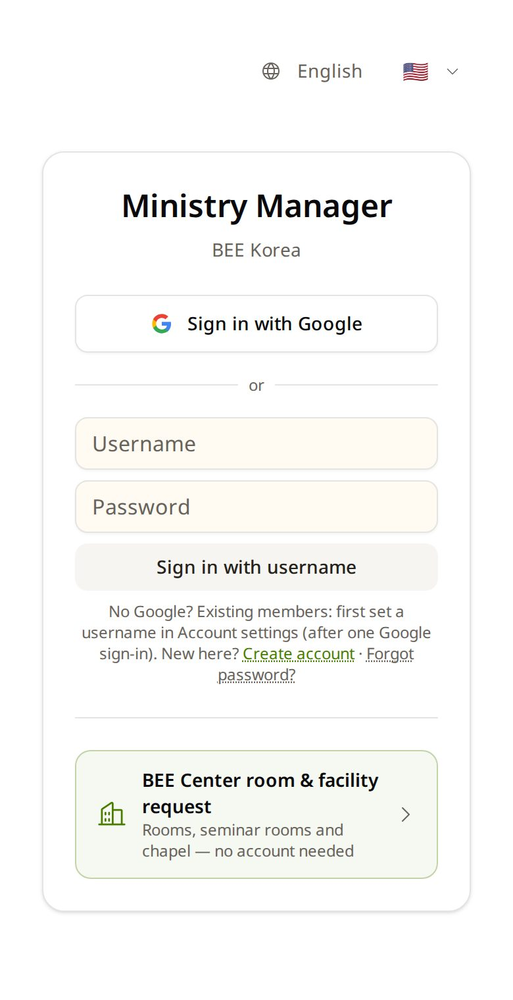
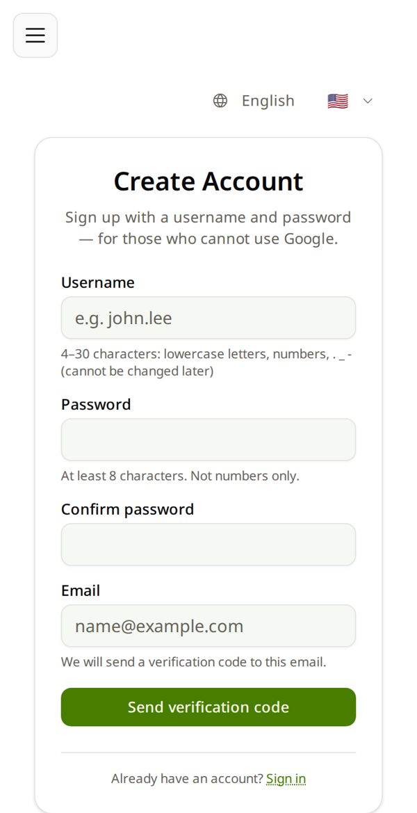
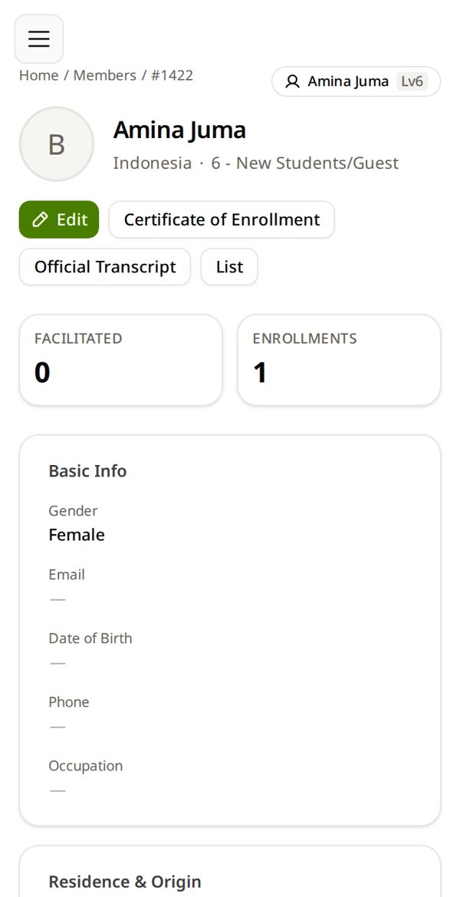
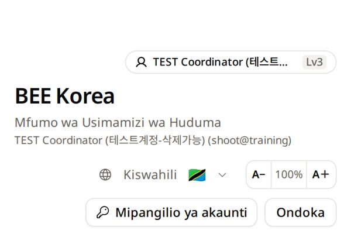

Draft — pictures from the live site (10/23, test student). ✳ = screen drawn by hand: no photo yet.시안 — 사진은 운영 화면(10/23, 테스트 학생 계정). ✳ = 사진이 없어 손으로 그린 화면.
MMinistry Manager Guide가이드북
👋
Welcome to Ministry ManagerMinistry Manager 에 오신 걸 환영해요
Let's get you in. About 5 minutes.들어가는 것까지 함께 해요. 5분쯤.
How will you sign in?어떻게 들어오세요?
Step단계

Tap Sign in with GoogleSign in with Google 을 누르세요
Open ministry.beekorea.org in Chrome or Safari first.먼저 Chrome 이나 Safari 에서 ministry.beekorea.org 를 엽니다.
Choose an account ✳
to continue to beekorea.org
GGrace M. grace.m@gmail.com
+Use another account
Pick the Gmail BEE knowsBEE 가 아는 Gmail 을 고르세요
Not sure which one? Ask the person who invited you.어느 것인지 모르겠으면 초대한 분께 물어보세요.
Welcome 👋 ✳
I'm newRegister as a new member
I'm already registeredFind and link my account
First time at BEE? Tap I'm newBEE 가 처음이면 I'm new
Then fill in your details and tap Review.이어서 내 정보를 채우고 Review.
⚠️ Already registered by BEE? Do not tap “I'm new”. Go back and pick the Gmail you gave BEE.⚠️ BEE 에 이미 등록됐다면 「I'm new」를 누르지 마세요. 돌아가서 BEE 에 알려 준 Gmail 을 고르세요.
Type your username and password아이디와 비밀번호를 넣으세요
The ones your facilitator wrote down for you. Not your Gmail.인도자가 적어 준 것. Gmail 이 아닙니다.
Tap Sign in with usernameSign in with username 을 누르세요
“Incorrect username or password”? Ask your facilitator for a new password.「아이디 또는 비밀번호가 올바르지 않습니다」가 나오면 인도자에게 새 비밀번호를 부탁하세요.
Tap Create accountCreate account 를 누르세요
It is the small link under the boxes.입력칸 아래 작은 글자입니다.

Fill in the four boxes네 칸을 채우세요
Username · password (twice) · email. Write the username and password on paper.아이디 · 비밀번호(두 번) · 이메일. 아이디와 비밀번호는 종이에 적어 두세요.
Tap Send verification codeSend verification code 를 누르세요
Open your email. Type the 6-digit code you got.이메일을 열어 받은 6자리 코드를 넣습니다.
Where do you live? ✳
Choose the country you really live in
🇹🇿 Tanzania
🇰🇪 Kenya
🇺🇬 Uganda
Fill in your details내 정보를 채우세요
Name as on your ID card · birth date · the country you really live in.신분증과 같은 이름 · 생년월일 · 실제로 사는 나라.
Your country decides who approves your requests.고른 나라의 BEE 담당자가 내 신청을 승인합니다.
You're in! 🎉 Your name is at the top들어왔어요! 🎉 맨 위에 내 이름
The big tiles are the doors. You only see the doors you need.큰 타일이 문입니다. 내게 필요한 문만 보입니다.

Check your name and phone → Edit이름과 전화번호 확인 → Edit
Tap your name at the top → My profile. Your diploma prints the name written here.맨 위 내 이름 → My profile. 수료증에는 여기 이름이 그대로 찍힙니다.
✓
All done!끝!
Next time is quicker with Ministry Manager on your home screen.홈 화면에 두면 다음엔 한 번에 열려요.
❓ How do I…이럴 땐
🌐Change the language언어 바꾸기
Tap the globe with a flag → English or Kiswahili. This phone remembers it.
국기 있는 지구 단추 → English 나 Kiswahili. 이 폰이 기억합니다.

📲Put it on my home screen홈 화면에 두기
Android: ⋮ → Install app
iPhone: Share ⬆ → Add to Home Screen
Android: ⋮ → Install app
iPhone: Share ⬆ → Add to Home Screen
🧭Get back when lost길 잃었을 때
☰ → ← Home. On iPhone apps there is no back button — use ☰.
☰ → ← Home. 아이폰 앱에는 뒤로 단추가 없어요 — ☰ 를 쓰세요.
🔐Sign in without GoogleGoogle 없이 로그인
Sign in with Google once → Account settings → Username & Password → make one.
Google 로 한 번 들어와 Account settings → Username & Password → 만들기.
🆘 I'm stuck막혔어요
“Incorrect username or password.”「아이디 또는 비밀번호가 올바르지 않습니다.」
Typed your Gmail? Use Sign in with Google instead.
Username from your facilitator? Ask them for a New password.
Gmail 을 넣었나요? 대신 Sign in with Google.
인도자가 만든 아이디? New password(새 비밀번호)를 부탁하세요.
“Welcome 👋” — but I already have an account「Welcome 👋」— 이미 계정이 있는데요
You used a different Gmail. Tap Sign in with a different Google account. Not sure? I'm already registered → find your account.
다른 Gmail 로 들어왔습니다. Sign in with a different Google account. 모르겠으면 I'm already registered → 내 계정 찾기.
I forgot my password비밀번호를 잊었어요
Gmail: no password — Sign in with Google.
Username with email: Forgot password?
Username from class: ask your facilitator.
Gmail: 비밀번호 필요 없음 — Sign in with Google.
이메일 있는 아이디: Forgot password?
수업에서 받은 아이디: 인도자에게.
New phone폰을 바꿨어요
Sign in the same way. Everything is in your account, not on the phone.